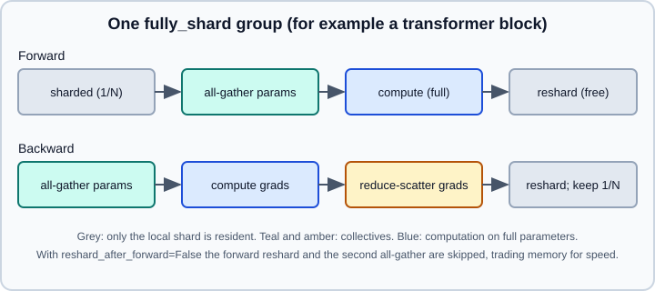

FSDP2 (fully_shard)
|
This content was generated with the assistance of AI and should be verified against the official documentation before being relied on in production. |
Data parallelism (DDP) keeps a full copy of the parameters, gradients and optimizer state on every GPU. When that no longer fits, you shard the state: each GPU permanently stores only one slice of every tensor, and gathers the full tensors it needs for a layer only while that layer runs. This is the idea of ZeRO stage 3, and in PyTorch it is called Fully Sharded Data Parallel. PyTorch 2.15 documents two generations. The current API is FSDP2, exposed as the function torch.distributed.fsdp.fully_shard; the older FullyShardedDataParallel wrapper class is FSDP1, and the official tutorial states that FSDP1 is deprecated. This page covers FSDP2.
Targeted versions: Python 3.13 and PyTorch 2.15. The examples are written for CUDA GPUs. They were run on Python 3.13 with PyTorch 2.15 on 2026-10-31 as two CPU processes under torchrun with the Gloo back end, with "cuda" replaced by "cpu" and an explicit CPU mesh (fully_shard(module, mesh=init_device_mesh("cpu", (world_size,)))); on a Mac without that mesh fully_shard picks the MPS device and fails, so pass the mesh when you smoke-test on CPU. Many fully_shard methods are marked in the reference as advanced or experimental; this page sticks to the stable, tutorial-level surface and names the rest only for orientation.
The mechanism
For each FSDP unit (a module or group of modules passed to fully_shard) the parameters are stored sharded: every rank keeps 1/N of each parameter, split along dimension 0 and represented as a DTensor. Training a step proceeds unit by unit:

-
Forward. All-gather the unit’s parameters so every rank holds the full tensors, run the layer, then free the gathered copies (reshard) unless configured otherwise. The all-gather of the next unit is prefetched and overlaps with the current unit’s compute.
-
Backward. All-gather the parameters again (unless they were kept), compute gradients, reduce-scatter the gradients so that each rank receives the averaged gradient for its own shard only, then reshard.
-
Optimizer. Each rank updates only its shard, using optimizer state that is also sharded. No rank ever holds the full optimizer state.
The figure is an original illustration of this life cycle (see the FSDP tutorial and the fully_shard reference listed below). Peak memory is therefore the sharded state plus the full parameters and gradients of roughly one or two units, plus activations, instead of the whole model. The price is communication: about two all-gathers and one reduce-scatter per unit per step, versus one all-reduce for DDP. Fast interconnects and good overlap make this worthwhile.
Basic usage
Apply fully_shard bottom-up: first to each repeated block, then to the root. The official tutorial explains why: wrapping each layer makes it a communication unit, so only that layer’s parameters are gathered at a time, and the root call then picks up the remaining parameters (embeddings, final norm) that the per-layer calls did not cover.
# train_fsdp2.py
import os
import torch
import torch.distributed as dist
import torch.nn as nn
from torch.distributed.fsdp import fully_shard, FSDPModule
class Block(nn.Module):
def __init__(self, dim):
super().__init__()
self.ff = nn.Sequential(nn.Linear(dim, 4 * dim), nn.GELU(), nn.Linear(4 * dim, dim))
self.norm = nn.LayerNorm(dim)
def forward(self, x):
return x + self.ff(self.norm(x))
class Transformer(nn.Module):
def __init__(self, vocab=1000, dim=512, depth=8):
super().__init__()
self.embed = nn.Embedding(vocab, dim)
self.layers = nn.ModuleList(Block(dim) for _ in range(depth))
self.head = nn.Linear(dim, vocab)
def forward(self, tokens):
x = self.embed(tokens)
for layer in self.layers:
x = layer(x)
return self.head(x)
def main():
local_rank = int(os.environ["LOCAL_RANK"])
torch.cuda.set_device(local_rank)
dist.init_process_group("nccl")
torch.manual_seed(0)
model = Transformer().cuda() # or build on the meta device, see below
for layer in model.layers:
fully_shard(layer) # one communication unit per block
fully_shard(model) # root: embeddings, head, anything left over
assert isinstance(model, FSDPModule)
# Create the optimizer AFTER sharding: it must see the sharded DTensor parameters
optimizer = torch.optim.AdamW(model.parameters(), lr=3e-4)
for step in range(10):
tokens = torch.randint(0, 1000, (8, 128), device="cuda")
logits = model(tokens)
loss = nn.functional.cross_entropy(logits.view(-1, logits.size(-1)), tokens.view(-1))
loss.backward()
torch.nn.utils.clip_grad_norm_(model.parameters(), 1.0)
optimizer.step()
optimizer.zero_grad(set_to_none=True)
if dist.get_rank() == 0:
print(step, loss.item())
dist.destroy_process_group()
if __name__ == "__main__":
main()torchrun --standalone --nproc-per-node=2 train_fsdp2.pySource: https://docs.pytorch.org/tutorials/intermediate/FSDP_tutorial.html and https://docs.pytorch.org/docs/stable/distributed.fsdp.fully_shard.html
What fully_shard does, according to the tutorial and the reference:
-
It shards the unit’s parameters across the ranks and converts them to
DTensorwithShard(dim=0)placement by default. -
It moves the sharded model to the training device.
-
It modifies the module in place and returns it as an
FSDPModule: your class gains theFSDPModulemethods, but the module is not wrapped in a new container. Registered hooks drive the gather and reshard steps. Because there is no wrapper, parameter names are unchanged;model.state_dict()keys stay the same before and after sharding. -
Applied to the root, it covers only the parameters not already assigned to an inner call.
-
Standard optimizers such as
torch.optim.Adamandtorch.nn.utils.clip_grad_norm_work on the DTensor parameters without changes. Build the optimizer after sharding.
fully_shard also accepts a list of modules, which are grouped into one communication unit. Grouping small modules reduces the number of collectives; making units too large raises peak memory.
The signature
fully_shard(
module, # a module or list of modules (one communication group)
*,
mesh=None, # DeviceMesh: 1-D for FSDP, 2-D for hybrid sharding
reshard_after_forward=None,
shard_placement_fn=None,
mp_policy=MixedPrecisionPolicy(),
offload_policy=OffloadPolicy(),
ignored_params=None,
dp_mesh_dims=None,
)| Argument | Meaning |
|---|---|
|
A 1-D |
|
|
|
Per-parameter override of the placement. It can return |
|
A |
|
An |
|
Parameters FSDP leaves alone: not sharded, not moved and not reduced. You are then responsible for synchronising them. |
|
For a full SPMD mesh whose parameters are already DTensors: a |
Device meshes and hybrid sharding
A device mesh describes how the GPUs are arranged. For plain FSDP2 you can omit mesh. For hybrid sharding on several nodes, shard inside each node (fast links) and replicate across nodes (slower links), so the expensive all-gather stays local and only a gradient all-reduce crosses nodes.
import os
from torch.distributed.device_mesh import init_device_mesh
from torch.distributed.fsdp import fully_shard
nodes = int(os.environ["WORLD_SIZE"]) // int(os.environ["LOCAL_WORLD_SIZE"])
gpus_per_node = int(os.environ["LOCAL_WORLD_SIZE"])
mesh = init_device_mesh("cuda", (nodes, gpus_per_node), mesh_dim_names=("replicate", "shard"))
for layer in model.layers:
fully_shard(layer, mesh=mesh)
fully_shard(model, mesh=mesh)Source: https://docs.pytorch.org/docs/stable/distributed.fsdp.fully_shard.html and https://docs.pytorch.org/tutorials/beginner/dist_overview.html
Meshes also underpin tensor and pipeline parallelism, which compose with FSDP2 into multi-dimensional parallelism; see DTensor, Tensor & Pipeline Parallelism.
Mixed precision
MixedPrecisionPolicy sets the dtypes used for parameters and communication:
| Field | Meaning |
|---|---|
|
Dtype of the unsharded parameters, used for compute and the all-gather. Floating-point inputs are cast to it unless disabled. |
|
Dtype for the gradient reduce-scatter. The 2.15 reference notes that |
|
If set, floating-point forward outputs are cast to it. |
|
Whether to cast floating-point inputs to |
|
Optional per-parameter dtype override. It must return the same result on every rank. |
The usual recipe, and the one in the tutorial, is bfloat16 compute and communication of parameters with float32 gradient reduction and float32 master (sharded) parameters:
import torch
from torch.distributed.fsdp import fully_shard, MixedPrecisionPolicy
mp = MixedPrecisionPolicy(param_dtype=torch.bfloat16, reduce_dtype=torch.float32)
for layer in model.layers:
fully_shard(layer, mp_policy=mp)
fully_shard(model, mp_policy=mp)The sharded parameters you optimise stay in their original dtype (float32 if you created the model that way), so the optimizer updates full-precision weights while compute runs in bfloat16. This differs from wrapping the forward in torch.autocast, though the two can be combined; see Mixed Precision with torch.amp and Hardware & Mixed Precision.
CPU offload
CPUOffloadPolicy(pin_memory=True) keeps the sharded parameters and gradients on the CPU and runs the optimizer step there, bringing parameters to the GPU only when a unit runs. It lowers GPU memory further at a large cost in transfer time. Set pin_memory=False if host memory is tight.
from torch.distributed.fsdp import fully_shard, CPUOffloadPolicy
offload = CPUOffloadPolicy(pin_memory=True)
for layer in model.layers:
fully_shard(layer, offload_policy=offload)
fully_shard(model, offload_policy=offload)Prefetching and manual control
By default FSDP2 prefetches implicitly: while one unit computes, it issues the all-gather for the next unit in the order observed in the previous iteration. Methods on every FSDPModule give explicit control:
-
unshard(async_op=False)all-gathers the parameters now (returns a handle if async);reshard()frees them again. Neither is recursive. Callingmodel.unshard()early lets you overlap the first all-gather with other work, such as data loading. -
set_modules_to_forward_prefetch(modules)andset_modules_to_backward_prefetch(modules)name the modules whose all-gathers to issue early. Passing two or more modules gives more overlap and uses more memory. -
set_reshard_after_forward(flag, recurse)andset_reshard_after_backward(flag, recurse)change the reshard behaviour at run time.
layers = list(model.layers)
for i, layer in enumerate(layers):
if i + 1 < len(layers):
layer.set_modules_to_forward_prefetch([layers[i + 1]])
if i > 0:
layer.set_modules_to_backward_prefetch([layers[i - 1]])Source: https://docs.pytorch.org/tutorials/intermediate/FSDP_tutorial.html and https://docs.pytorch.org/docs/stable/distributed.fsdp.fully_shard.html
The reference lists many more advanced controls (custom all-gather and reduce-scatter, all-reduce hooks, manual backward finalisation, a separate reduce-scatter group and others). They are meant for framework authors; start with the defaults and profile before using any of them.
Gradient accumulation
FSDP2 has no no_sync() context. The equivalent is set_requires_gradient_sync(flag, recurse): disable it for the first micro-batches and enable it for the last, so the reduce-scatter happens once per optimizer step.
def accumulate(model, micro_batches, loss_fn, optimizer):
n = len(micro_batches)
for i, (x, y) in enumerate(micro_batches):
is_last = i == n - 1
model.set_requires_gradient_sync(is_last) # sync only on the last micro-batch
loss = loss_fn(model(x), y) / n
loss.backward()
optimizer.step()
optimizer.zero_grad(set_to_none=True)Not syncing keeps unsharded gradients in memory between micro-batches, so memory grows compared with synchronising each time. If that is a problem, call set_reshard_after_backward appropriately or accept the extra communication.
Initialising models that do not fit
Instantiating the full model on every GPU defeats the purpose for very large models. The usual pattern is to build on the meta device (no storage), apply fully_shard, then materialise only the local shards and initialise them. The torch.device("meta") context and Module.to_empty are described in nn.Module; the FSDP tutorial and the checkpoint loading path (below) show how to fill the shards from a checkpoint instead of initialising from scratch.
import torch
with torch.device("meta"):
model = Transformer() # no memory allocated
for layer in model.layers:
fully_shard(layer)
fully_shard(model)
model.to_empty(device="cuda") # allocate only the local shards, uninitialised
# then run your init (or load a checkpoint) on the DTensor parametersSource: https://docs.pytorch.org/docs/stable/meta.html and https://docs.pytorch.org/docs/stable/distributed.fsdp.fully_shard.html
Because to_empty leaves memory uninitialised, re-run the weight initialisation (for example reset_parameters on each submodule, using torch.nn.init functions that support DTensor) or load a checkpoint before training.
Checkpointing and state dicts
Parameter names do not change, and the state dict of a sharded model contains DTensors. Producing a sharded state dict needs no communication; a full state dict (one unsharded copy) must be assembled. Options:
-
Call
DTensor.full_tensor()on each tensor yourself, which gathers it on every rank. -
Use the distributed state dict helpers from
torch.distributed.checkpoint.state_dict, which the tutorial uses asget_model_state_dictandset_model_state_dictwith options such asfull_state_dict=Trueand CPU offload. -
Save and load a sharded checkpoint with Distributed Checkpoint (DCP), which writes each rank’s shards in parallel and can reload on a different number of GPUs (resharding). This is the right choice for large models; see Distributed Checkpoint & Flight Recorder.
from torch.distributed.checkpoint.state_dict import (
get_model_state_dict,
StateDictOptions,
)
full_sd = get_model_state_dict(
model, options=StateDictOptions(full_state_dict=True, cpu_offload=True)
)
if dist.get_rank() == 0:
torch.save(full_sd, "full_model.pt") # loadable into a plain, unsharded modelSource: https://docs.pytorch.org/tutorials/intermediate/FSDP_tutorial.html and https://docs.pytorch.org/docs/stable/distributed.checkpoint.html
Every rank must call get_model_state_dict (it performs collectives); only rank 0 writes the file. For optimizer state use the corresponding optimizer helpers in the same module, and read the DCP page before designing a resume procedure.
Combining with activation checkpointing and compile
Apply activation checkpointing inside each block before calling fully_shard on it, so recomputation re-uses the gathered parameters; see GPU Memory & Activation Checkpointing. torch.compile can be applied per block before sharding (compile the unit, then fully_shard it); consult torch.compile and the troubleshooting page for guard and graph-break issues.
Migrating from FSDP1
The official FSDP tutorial includes a migration table. In outline:
FSDP1 (FullyShardedDataParallel) |
FSDP2 (fully_shard) |
|---|---|
Wrapper class that replaces the module and changes parameter names |
In-place; the module keeps its class (plus |
Flattens and concatenates parameters of a unit into one |
Per-parameter sharding on dimension 0 with DTensor; makes mixing frozen and trainable parameters, per-parameter dtypes and sharded state dicts simpler. |
|
Explicit calls to |
|
|
|
|
|
|
|
|
|
No equivalent: FSDP2 does not use |
Full state dict through FSDP-specific state-dict types |
DTensor state dict plus |
Source: https://docs.pytorch.org/tutorials/intermediate/FSDP_tutorial.html and https://docs.pytorch.org/docs/stable/distributed.fsdp.fully_shard.html
Old books and blog posts that show FullyShardedDataParallel(model, auto_wrap_policy=...) describe FSDP1. Treat them as legacy; the archived FSDP1 tutorials remain at https://docs.pytorch.org/tutorials/intermediate/FSDP1_tutorial.html and https://docs.pytorch.org/tutorials/intermediate/FSDP_advanced_tutorial.html.
Choosing the granularity
-
One unit per transformer block is the standard. Too coarse (the whole model in one call) keeps all parameters gathered at once and loses the memory benefit; too fine (every Linear) adds many small collectives.
-
Put embeddings and the output head in the root, or in their own units if they are huge (large vocabularies).
-
If the model is small enough for one GPU, DDP is simpler and usually faster. FSDP2 pays off when memory forces it or when sharded optimizer state lets you use a larger batch.
-
Profile before tuning: look for exposed all-gathers (idle gaps before each block’s compute) in the profiler timeline.
Pitfalls
-
Creating the optimizer before
fully_shard: the optimizer then holds the old, unsharded parameters. -
Calling
fully_shardon the root first, or only on the root: one giant unit and no memory saving. -
Using different model structure on different ranks.
-
Forgetting that
reshard_after_forward=NonemeansFalsefor the root, which keeps the root’s parameters resident. -
Saving
model.state_dict()withtorch.savefrom rank 0 and expecting a normal checkpoint: it contains DTensors holding only the local shard. -
Mixing FSDP1 and FSDP2 APIs, or copying FSDP1 snippets.
-
Gradient accumulation without
set_requires_gradient_sync, which pays a reduce-scatter for every micro-batch. -
Non-zero shard dimensions (
shard_placement_fn) that do not divide evenly.
For the broader picture of when to combine FSDP with tensor and pipeline parallelism see Distributed Overview, torchrun & Elastic and Distributed Training Concepts.